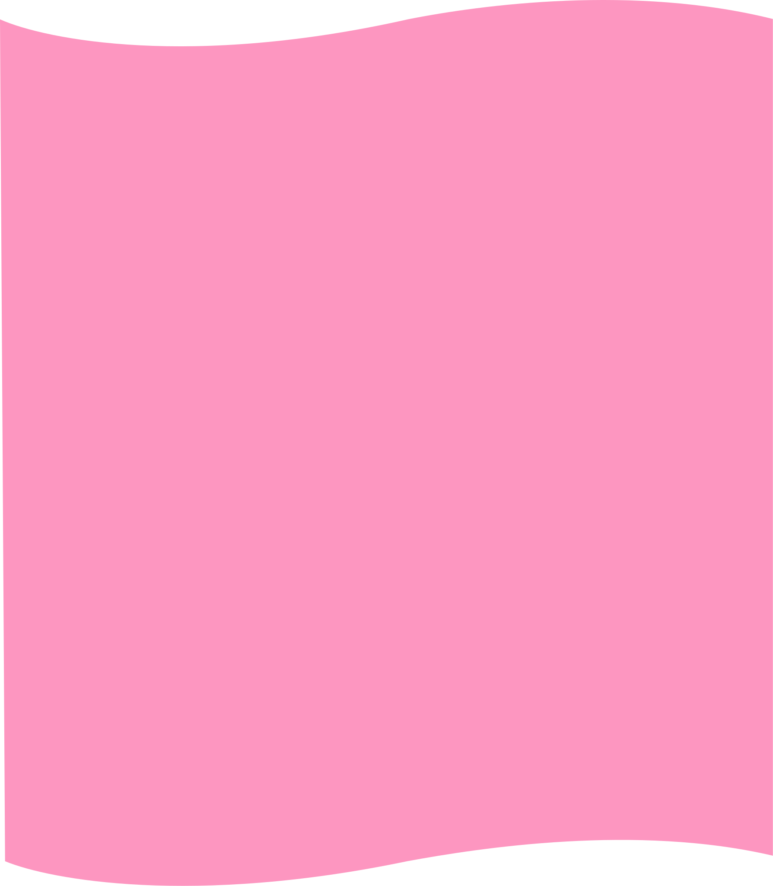

01
Paleta cromática
La identidad visual de RAÍZ utiliza una paleta vibrante inspirada en la restauración, la naturaleza y los materiales nobles.
02
Sistema tipográfico
RAÍZ utiliza una combinación de una tipografía display con personalidad y una tipografía de lectura para generar jerarquía, calidez y claridad en toda la interfaz.
Display
Bricolage Grotesque
Utilizada para títulos, encabezados y elementos destacados.
Body
Inter es la tipografía utilizada para párrafos, botones, navegación y contenido de lectura. Su excelente legibilidad permite mantener una interfaz clara y accesible.
Regular · Medium · SemiBold · Bold
03
Botones
El sistema de botones de RAÍZ se compone de dos variantes: un botón primario para las acciones principales y un botón secundario para acciones complementarias. Ambos mantienen una forma redondeada y una estética simple, alineada con la identidad de la marca.
04
Recursos gráficos
RAÍZ incorpora recursos gráficos propios que refuerzan su identidad visual: formas orgánicas, patrones y divisores inspirados en la estética contemporánea y colorida de la marca.
Forma orgánica

Divisores
Iconografía